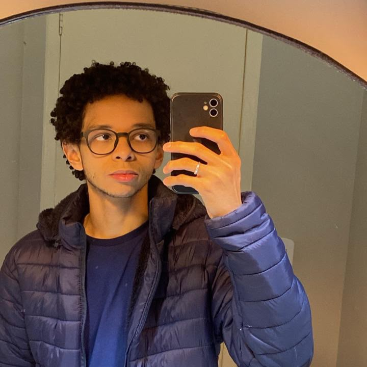

Impressoras IT
Ferramenta com interface gráfica em PowerShell e WPF que automatiza a instalação de impressoras para técnicos de TI.
PowerShell, WPF, Windows
Suporte de TI e graduando em Engenharia de Software
Cuido da infraestrutura de TI da Prefeitura de Rio Claro (RJ) e crio projetos web para evoluir como desenvolvedor.

Sou tecnólogo em Análise e Desenvolvimento de Sistemas e curso Engenharia de Software. Trabalho no setor de informática da administração pública, onde faço manutenção de computadores, suporte aos usuários, instalação e configuração de sistemas e resolução de problemas técnicos.
Essa rotina me deu prática em atendimento, diagnóstico e resolução de incidentes. Hoje uso essa base para crescer em desenvolvimento de software, segurança da informação e dados, com cursos, estudos e projetos próprios.
Busco uma oportunidade em equipe de tecnologia para evoluir tecnicamente e entregar soluções de qualidade.
Idiomas: português (nativo), inglês (profissional limitado) e espanhol (básico).
Março de 2026 até o momento
Prefeitura Municipal de Rio Claro, RJ
Atuo no setor de informática com suporte técnico aos usuários, manutenção preventiva e corretiva de computadores, instalação e configuração de sistemas operacionais e softwares, suporte remoto e gerenciamento básico da infraestrutura de TI dos diversos setores da administração pública.
Abril a junho de 2025
Fundação Bradesco, remoto
Estudo prático de Segurança da Informação, com foco em projetos, certificações e desenvolvimento técnico.
Agosto de 2022 a agosto de 2024
Prefeitura Municipal de Rio Claro, RJ
Diagnóstico e reparo de computadores, instalação e configuração de sistemas, softwares, impressoras e equipamentos, configuração de endereçamento IP, organização de redes, suporte presencial e remoto, e apoio ao uso de sistemas internos e à organização de dados em projetos administrativos.
Ferramenta com interface gráfica em PowerShell e WPF que automatiza a instalação de impressoras para técnicos de TI.
PowerShell, WPF, Windows
Site de gerenciamento de tarefas feito em HTML, CSS e JavaScript puros.
HTML, CSS, JavaScript
Catálogo de filmes inspirado no Letterboxd, com nota média combinada de IMDb e AdoroCinema e layout fluido.
HTML, CSS, JavaScript
Site publicado na web, desenvolvido como projeto pessoal.
Web
Abrir o siteMais projetos no meu GitHub.
UBM, Centro Universitário de Barra Mansa. Março de 2026 a março de 2030 (previsão).
Estácio. Abril de 2022 a agosto de 2025.
Vamos conversar sobre oportunidades, projetos ou parcerias.